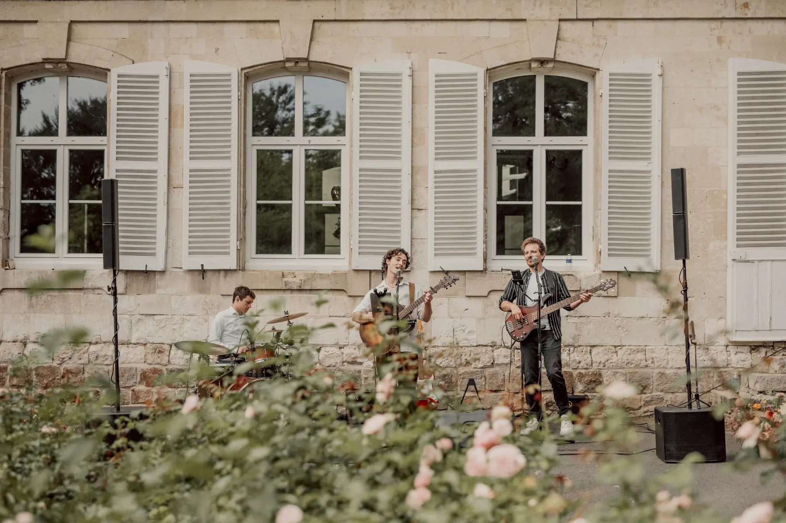
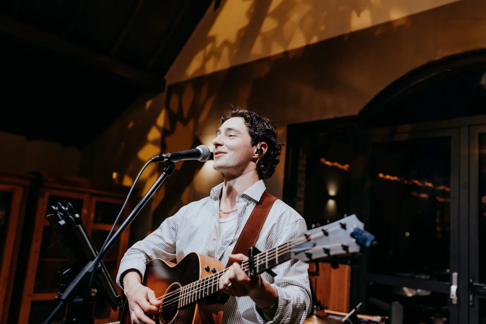
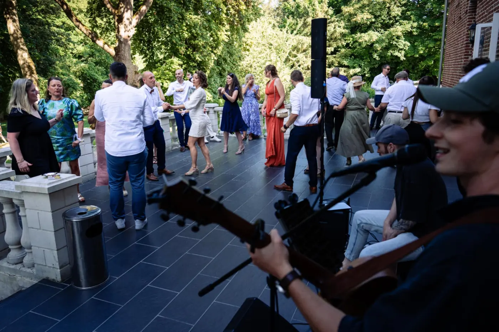
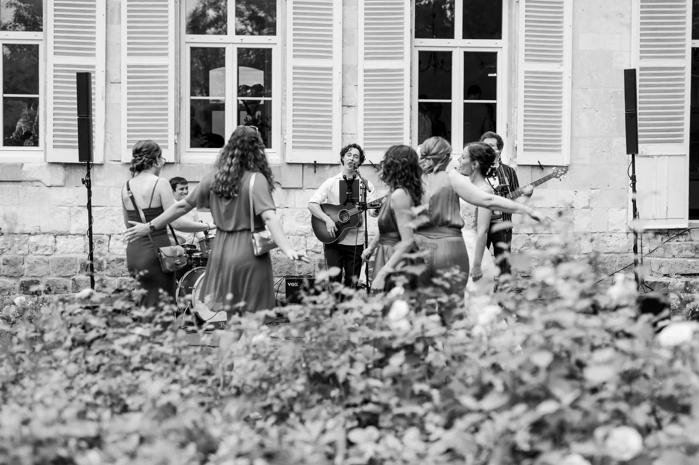

Cérémonie
Solo ou duo acoustiqueLaïque ou religieuse, entièrement personnalisable : entrée, échange des alliances, sortie. Nous apprenons les chansons qui vous ressemblent.

Groupe pop-rock basé à Lille, JamBag accompagne votre mariage du premier verre au dernier morceau, partout en France.
Une cérémonie qui fait monter les larmes, un vin d'honneur où l'on chante déjà, une piste qui ne désemplit pas : nous construisons la musique de votre journée avec vous, moment après moment.
Votre histoire, vos invités, les chansons qui comptent pour vous : tout part de là.
Un moment ou plusieurs : c'est vous qui choisissez. Le plus souvent, nos mariés nous confient la cérémonie et le vin d'honneur, ou la soirée dansante.

La carte
Laïque ou religieuse, entièrement personnalisable : entrée, échange des alliances, sortie. Nous apprenons les chansons qui vous ressemblent.
Une ambiance chaleureuse, lounge ou déjà festive, qui laisse respirer les conversations puis fait se lever les premiers danseurs.
Le quartet prend la piste. Deux heures de live où trois générations chantent les mêmes refrains.
Nos DJs partenaires prennent le relais, sans temps mort.
Toute la journée avec nous ? C'est possible aussi.
Quelques mots de nos mariés, publiés sur LiveTonight, Linkaband et Google.
« Carl et JamBag ont été parfaits, vraiment parfaits. Une performance exceptionnelle qui a enflammé notre vin d'honneur. Merci de la part des 220 invités ! »
« Ils ont réalisé mon rêve en jouant All You Need Is Love avec nos invités. Tous nos invités nous en parlent encore ! »
« Carl et Quentin ont rendu possible notre demande spéciale : jouer avec le groupe à la fin de la cérémonie. C'était génial. »
« Tout le monde a dansé, c'était un des meilleurs moments de la journée. »
« Pendant la préparation, ils ont été à l'écoute de nos propositions et de bon conseil. Tous les invités ont été impressionnés. »
« Tout le monde sur la piste, tout le monde fredonnait. Bref, un grand moment parfait ! »
« Super talented musicians for our wedding evening. Great set, a mix of French and English songs. Merci! »









Bien sûr. Les cérémonies sont entièrement personnalisables, et pour la soirée, vous pouvez nous proposer jusqu'à cinq titres ou une chanson spéciale que nous apprenons pour vous.
Nous intervenons sur la cérémonie, le vin d'honneur et la soirée dansante. Pendant le dîner, une playlist ou notre DJ partenaire prend le relais.
Un espace dédié au groupe et une alimentation électrique à proximité. Notre fiche technique précise tout, et nous nous adaptons à votre lieu.
Le concert a lieu, quoi qu'il arrive. Chaque musicien a son remplaçant attitré dans la famille JamBag : nous gérons le remplacement et nous vous prévenons toujours. Si un concert ne pouvait pas avoir lieu de notre fait, il serait intégralement remboursé. Ce n'est jamais arrivé.
Partout en France et à l'étranger. Les frais de déplacement sont indiqués clairement dans le devis.
La vidéo ne s'affiche pas ? Ouvrir sur YouTube